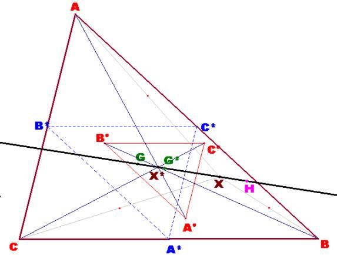
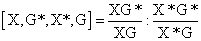
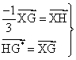
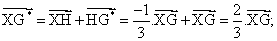
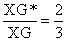
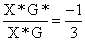
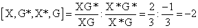

Problema 274
1) Sea X un punto arbitrario del
triángulo ABC. Construimos los puntos C´, B´, A´, como los centros de gravedad
de los triángulos ABX, AXC y BXC.
Sea X* el punto de
intersección de las rectas AA´, BB´, y CC´.
Se pide:
a) El triángulo A´B´C´ es homotético al triángulo ABC.
Calcular el centro y la razón de la
homotecia.
b) Si G, y G*son los centros de gravedad de los triángulos ABC, y A´B´C´,
respectivamente, probar que los puntos G, G*, X y X* son colineales, y,
calcular su razón doble.
Romero, J.B. (2005): Comunicación
personal
Solución de F. Damián Aranda Ballesteros,
profesor del IES Blas Infante de Córdoba, España.
|
 |
|
a) El triángulo A´B´C´ es
homotético al triángulo ABC. Calcular
el centro y la razón de la homotecia. · Consideramos el triángulo medial, es decir, el formado por los puntos medios A*, B* y C* de los lados del triángulo ABC. Este triángulo A*B*C* es homotético con el ABC con centro el punto G y razón k1=−1/2. · El triángulo A’B’C’ es homotético con el A*B*C* con centro el punto X y razón k2= 2/3. ·
Si transformamos al triángulo ABC mediante la
homotecia de centro, X y razón k3= −1/3 , resultará que la
imagen del punto G será el punto H. Si a continuación realizamos una
traslación según el vector , resultará como imagen el triángulo A’B’C’ y se tendrá que
. Así el triángulo A’B’C’ será semejante al inicial ABC con
razón de semejanza igual a 1/3. · Por tanto, X*, punto de intersección de las rectas AA´, BB´ y CC´ será el centro de la homotecia del triángulo A´B´C´ respecto al triángulo ABC con razón igual a −1/3. De este modo resulta la colinealidad de los puntos G, G*, X y X*. b) Si G, y G* son los centros de
gravedad de los triángulos ABC, y A´B´C´, respectivamente, probar que los
puntos G, G*, X y X* son colineales, y, calcular su razón doble. Calculamos ahora su razón doble:  Para ello, tenemos en cuenta que:  Así tenemos que:  Por tanto:  Por otro lado,  Luego entonces:  |